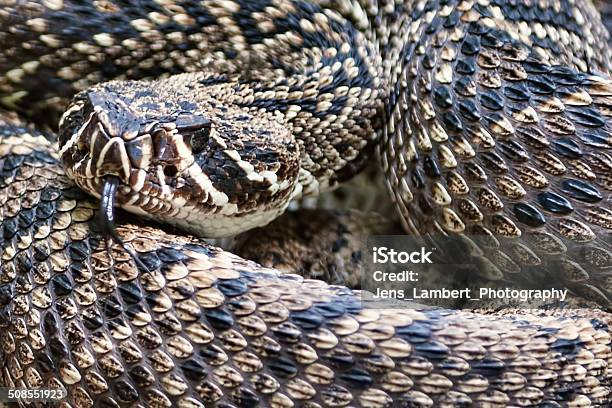
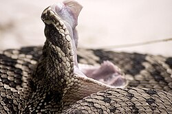

.jpg)


.jpg)
งูหางกระดิ่งหลังเพชรตะวันออก (Eastern Diamondback Rattlesnake)
ชื่อวิทยาศาสตร์: Crotalus adamanteus
ลักษณะทั่วไป
งูหางกระดิ่งหลังเพชรตะวันออกมีลำตัวหนาและบึกบึน โดดเด่นด้วยลายรูปข้าวหลามตัด (Diamond) สีน้ำเงินเข้มขอบสีเหลืองหรือครีมตลอดแนวขดหลัง หัวมีลักษณะเป็นสามเหลี่ยมชัดเจนพร้อมแถบสีดำพาดผ่านดวงตา บริเวณปลายหางมีอุปกรณ์ส่งเสียงเตือน หรือ "ลูกกระดิ่ง" ที่เกิดจากปล้องสารเคราตินซ้อนกัน และมีอวัยวะรับรังสีอินฟราเรด (Pit organ) อยู่ระหว่างรูจมูกกับดวงตาสำหรับตรวจจับความร้อนของเหยื่อ
ความยาว: ความยาวเฉลี่ยขณะโตเต็มวัยอยู่ที่ 1.1–1.5 เมตร โดยตัวผู้จะมีขนาดใหญ่กว่าตัวเมีย (สถิติทรงจำสูงสุดที่เคยบันทึกไว้ยาวถึง 2.4 เมตร)
น้ำหนัก: น้ำหนักเฉลี่ยประมาณ 2.3–4.5 กิโลกรัม ส่วนตัวที่มีขนาดใหญ่เป็นพิเศษอาจมีน้ำหนักพุ่งสูงได้ถึง 10 กิโลกรัม
รูปร่าง: ลำตัวกลมหนา ใหญ่แน่น รูปร่างสมส่วนสำหรับงูซุ่มโจมตีบนพื้นดิน ไม่เหมาะกับการปีนป่ายต้นไม้
อาหารการกิน
ประเภทเหยื่อ: เป็นสัตว์กินเนื้อ โดยอาหารหลักคือสัตว์เลี้ยงลูกด้วยนมขนาดเล็ก เช่น กระต่าย นก หนู กระรอก และบางครั้งอาจกินสัตว์เลื้อยคลานขนาดเล็ก
วิธีกิน: เมื่อฉกเหยื่อและปล่อยพิษแล้ว งูจะปล่อยให้เหยื่อวิ่งหนีไปก่อน จากนั้นจะใช้ลิ้นสองแฉกและอวัยวะรับกลิ่น อุปกรณ์รับความร้อน (Pit organ) สะแกนหาร่องรอยเพื่อตามไปเก็บงานภายหลัง
นิสัยและพฤติกรรม
นักซุ่มโจมตี: ชอบกบดานอยู่นิ่งๆ ตามโคนต้นไม้ กองไม้ หรือซอกหินเพื่อรอเหยื่อเดินผ่านมา มากกว่าการออกเดินสายล่า
รักสงบ ไม่ก้าวร้าวก่อน: โดยธรรมชาติจะพยายามหลีกเลี่ยงการปะทะกับมนุษย์หรือสัตว์ขนาดใหญ่ หากมีสิ่งรบกวนจะเลือกพรางตัวนิ่งๆ หรือเลื้อยหนี
พฤติกรรมเตือนภัย: หากถูกคุกคามในระยะกระชั้นชิดจนรู้สึกไม่ปลอดภัย จะขดตัวยกหัวขึ้นสูงเป็นรูปตัว S และสั่นปลายหางจนเกิดเสียงกระดิ่งรัวเพื่อเตือน หากผู้คุกคามยังเข้าใกล้ต่อจึงจะฉกโจมตี
ถิ่นอาศัย พิษ และความอันตราย
- ถิ่นอาศัย: งูหางกระดิ่งหลังเพชรตะวันออกเป็นสัตว์ประจำถิ่นเฉพาะบริเวณแถบชายฝั่งตะวันออกเฉียงใต้ของประเทศสหรัฐอเมริกา (Southeastern United States Coastal Plain) โดยพบการกระจายตัวตั้งแต่ตอนใต้ของรัฐนอร์ทแคโรไลนา ครอบคลุมพื้นที่ทั้งหมดของรัฐฟลอริดา ไปจนถึงหมู่เกาะฟลอริดาคีย์ส (Florida Keys) ทอดตัวตามแนวชายฝั่งอ่าวเม็กซิโก ผ่านรัฐจอร์เจีย แอละแบมา มิสซิสซิปปี ไปจนถึงตอนใต้ของรัฐหลุยเซียนา (แม้ในปัจจุบันคาดว่าอาจสูญพันธุ์ไปแล้วจากบางพื้นที่ เช่น หลุยเซียนา และลดจำนวนลงมากในนอร์ทแคโรไลนา)
- พิษ:พิษของงูหางกระดิ่งหลังเพชรตะวันออกจัดอยู่ในกลุ่ม Hemotoxin (ทำลายระบบเลือดและเนื้อเยื่อ) เป็นหลัก โดยมีเอนไซม์และโปรตีนออกฤทธิ์ซับซ้อน ได้แก่:
- Mytotoxin (ทำลายกล้ามเนื้อ): สลายเซลล์เนื้อเยื่อกล้ามเนื้อบริเวณที่ถูกกัด
- Procoagulants & Anticoagulants: ขัดขวางกระบวนการแข็งตัวของเลือด ทำให้เกล็ดเลือดและโปรตีนไฟบริโนเจนถูกใช้จนหมด ส่งผลให้เกิดภาวะเลือดไหลไม่หยุด
- Cytotoxin: ทำลายผนังเซลล์และเส้นเลือดฝอย ทำให้เนื้อเยื่อเน่าเปื่อย (Necrosis) และเกิดภาวะช็อก
- ระดับความอันตราย: อันตราย ☠☠☠☠: พิษเป็นแบบ Hemotoxin ที่รุนแรงมาก ทำลายเนื้อเยื่อ กล้ามเนื้อ และระบบการแข็งตัวของเลือดอย่างฉับพลัน จุดที่น่ากลัวที่สุดคือ ต่อมพิษขนาดใหญ่ ทำให้สามารถฉีดพิษต่อการกัด 1 ครั้งได้มากถึง 400–1,000 มิลลิกรัม (ขณะที่พิษเพียง ~100-150 มิลลิกรัมก็ทำให้มนุษย์เสียชีวิตได้แล้ว) ประกอบกับเขี้ยวพิษที่ยาว ทำให้พิษถูกฉีดเข้าลึกถึงชั้นกล้ามเนื้อ จัดเป็นหนึ่งในงูที่อันตรายและทรงพลังที่สุดในซีกโลกตะวันตก ถึงแม้โอกาสเจอกับคนทั่วไปจะไม่สูงมาก แต่หากแจ็คพอตเจอกระทันหันและถูกกัด ความรุนแรงของพิษสามารถคร่าชีวิตหรือทำให้พิการได้อย่างรวดเร็ว
งูชนิดนี้ชอบอาศัยในพื้นที่ราบสูงแห้งแล้งและโปร่ง เพื่อความสะดวกในการผึ่งแดดและซุ่มโจมตีเหยื่อ โดยประเภทพื้นที่อาศัยหลัก ได้แก่ ป่าสนใบยาว (Longleaf pine) พื้นที่ป่าไม้โปร่งที่มีพืชพรรณปกคลุมพื้นดิน เช่น หญ้าสายลวด (Wiregrass) หรือต้นปาล์มเตี้ย (Saw palmetto) สภาพแวดล้อมที่เป็นดินทราย สครับแลนด์ (Scrubland) และเนินทรายตามแนวชายฝั่ง นอกจากนี้ยังพบได้บ่อยตามเกาะแนวทราย เนื่องจากงูชนิดนี้มีความสามารถในการว่ายน้ำได้ดีเยี่ยม จึงมักข้ามฝั่งไปมาระหว่างเกาะกับแผ่นดินใหญ่ได้
งูชนิดนี้มักไม่ขุดรูเอง แต่จะใช้ประโยชน์จากรูใต้ดินของสัตว์ชนิดอื่น โดยเฉพาะรูของเต่าโกเฟอร์ (Gopher tortoise burrow) รูของตัวนิ่ม (Armadillo) หรือตอไม้หลุมใต้ดิน
1. อาการทันทีหลังถูกกัด (0 – 30 นาที)
จะมีอาการปวดแสบปวดร้อนอย่างฉับพลันและรุนแรงมาก บริเวณที่ถูกกัดจะเริ่มบวมอย่างรวดเร็วและขยายวงกว้างขึ้นเรื่อยๆ มีเลือดสดๆ ไหลออกจากรอยเขี้ยวพิษ เนื่องจากพิษต้านการแข็งตัวของเลือด
2. อาการระดับลุกลาม (30 นาที – 6 ชั่วโมง)
ผิวหนังรอบๆ เผลอเริ่มเปลี่ยนเป็นสีคล้ำ ช้ำเลือด และเกิดถุงน้ำพอง (Blisters) เซลล์กล้ามเนื้อบริเวณที่ถูกกัดเริ่มเปื่อยเน่า หากได้รับพิษปริมาณมากอาจสูญเสียอวัยวะได้
ลิ้นหรือริมฝีปากรู้สึกชา สัมผัสรสชาติเหมือนโลหะในปาก (Metallic taste) เหงื่อออกมาก เวียนศีรษะ คลื่นไส้ โก่งร่วง และอาเจียน
3. อาการขั้นวิกฤต (หากไม่ได้รับการรักษา)
เกิดภาวะช็อกจากการสูญเสียเลือดและผนังหลอดเลือดขยายตัว มีเลือดออกตามเหงือก ปัสสาวะเป็นเลือด หรือเลือดออกในช่องท้องและสมอง ไตวายฉับพลัน หัวใจล้มเหลว ระบบหายใจล้มเหลว และตายในที่สุด
Fun Fact
- กระดิ่งข้างในข้างกลวงและไม่มีลูกสะท้อน: เสียงสั่นลูกกระดิ่งที่ดังถี่และน่ากลัว ไม่ได้เกิดจากมีลูกหินหรือเม็ดก้อนข้างใน แต่เกิดจาก ปล้องเคราตินแห้งๆ ข้างกลวงขบกระทบกันเอง ด้วยความเร็วมหาศาลถึง 50–90 ครั้งต่อวินาที จากการขยับกล้ามเนื้อปลายหางที่ทำงานเร็วที่สุดชนิดหนึ่งในโลกสัตว์
- เป็นมิตรกับเต่าโกเฟอร์ (Gopher Tortoise): งูชนิดนี้ไม่ขุดรูเอง แต่เลือกใช้รูของ "เต่าโกเฟอร์" เป็นบ้านหลักเพื่อจำศีลในฤดูหนาว หลบไฟป่า และหลบความร้อน ซึ่งเต่าก็ยินยอมให้อาศัยอยู่ร่วมกันในรูใต้ดินเดียวกันโดยไม่ทำร้ายกัน
- นักว่ายน้ำข้ามเกาะขนาดยักษ์: แม้จะเป็นงูที่อาศัยบนพื้นดินและมีขนาดตัวหนาหนัก แต่มันเป็น นักว่ายน้ำที่เชี่ยวชาญมาก โดยสามารถยกหัวและลำตัวส่วนใหญ่อยู่เหนือผิวน้ำ และว่ายน้ำข้ามทะเลเป็นระยะทางหลายกิโลเมตรเพื่อเดินทางระหว่างเกาะชายฝั่ง (Barrier Islands) ได้สบายๆ